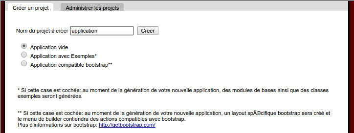
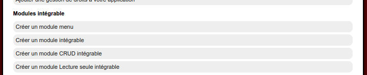
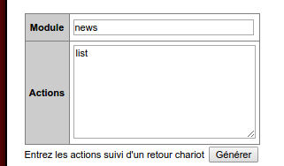
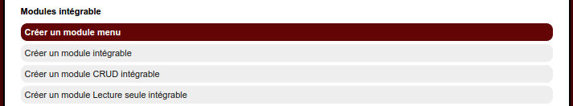
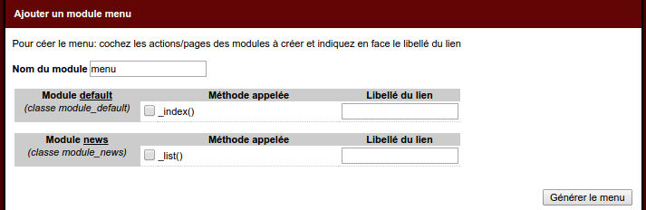
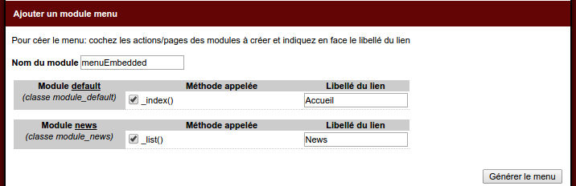
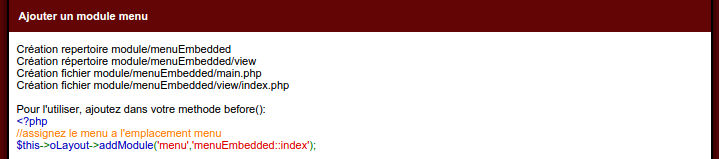
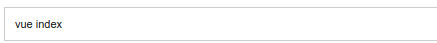
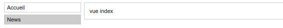
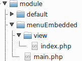

Episode 6: Builder: module menu
I. Introduction
Dans cet épisode nous allons montrer comment simplement générer un module menu pour notre application.Créer d'abord une application
Dans le builder, nous générons une application "application"

II. Le builder, la section modules intégrable
En cliquant sur le bouton d'édition de projet, vous pouvez voir plusieurs sections dont celle qui va nous intéresser ici : "Modules intégrable"
III. Préparation pour le tutoriel
Afin d'avoir un peu plus de matière, nous allons créer un module simple
Nous avons donc à cet instant deux modules: le module "default" (créé avec l'application) ainsi que le module "news" généré à l'instant
IV. Générons notre module "menu"
Cliquez sur le lien "Créer un module menu"
Le builder vous affiche un formulaire

Premièrement on vous propose de choisir le nom du module qui sera généré, par défaut "menu", mais vous pouvez le changer.
Nous allons le modifier pour menuEmbedded pour l'occasion.
Ensuite, le builder vous liste tous les modules avec leurs différentes actions disponibles.
Vous pouvez ainsi cocher à votre gré les actions et indiquer dans la collonne située à coté le libellé associé.
Ici nous renseignons "Accueil" pour l'action _index() du module "default" et "News" pour l'action _list() du module "news"

Validez le formulaire:

Le builder a créé notre module menuEmbedded
V. Inclusion de ce module dans notre application
Pour inclure ce module, on peut lire qu'il nous suffit d'ajouter une ligne de code dans la méthode before() de nos modules
//assignez le menu a l'emplacement menu
$this->oLayout->addModule('menu','menuEmbedded::index');
Editez donc le fichier module/default/main.php, sa méthode before()
<?php
class module_default extends abstract_module{
public function before(){
$this->oLayout=new _layout('template1');
//assignez le menu a l'emplacement menu
$this->oLayout->addModule('menu','menuEmbedded::index');
}
Faites de même pour le module "news", en ajoutant la même chose dans la méthode before()
<?php
class module_news extends abstract_module{
public function before(){
$this->oLayout=new _layout('template1');
//assignez le menu a l'emplacement menu
$this->oLayout->addModule('menu','menuEmbedded::index');
}
On passe de ce rendu:

A celui-ci

VI. Zoom sur le module menu
Si on édite le code de ce module généré, on a dans le ficheir module/menuEmbedded/main.php
<?php
Class module_menuEmbedded extends abstract_moduleembedded{
public function _index(){
$tLink=array(
'Accueil' => 'default::index',
'News' => 'news::list',
);
$oView=new _view('menuEmbedded::index');
$oView->tLink=$tLink;
return $oView;
}
}
Celui-ci étant assigné à une vue index
<ul>
<?php foreach($this->tLink as $sLibelle => $sLink): ?>
<?php if(_root::getParamNav()==$sLink):?>
<li class="selectionne"><a href="<?php echo $this->getLink($sLink) ?>"><?php echo $sLibelle ?></a></li>
<?php else:?>
<li><a href="<?php echo $this->getLink($sLink) ?>"><?php echo $sLibelle ?></a></li>
<?php endif;?>
<?php endforeach;?>
</ul>
La chose a se rappeler: le builder ne fait que générer des modules et des vues, vous avez la main ensuite pour les améliorer/personnaliser en fonction de vos besoins.
VII. Parenthèse : pour choisir le couple module/action par défaut
Editez le fichier conf/site.ini.php
[navigation]
scriptname=index.php
var=:nav
module.default=default
action.default=index
VIII. Parenthèse 2: différence entre le module "menuEmbedded" et les autres
Le module menu est un menu intégrable, celui-ci retourne son objet vue, alors que les autres modules (default/news) sont des modules autonomes qui gèrent la création du layout, et son affichage.Le fait de retourner son objet vue, permet aux autres modules de le récupérer pour l'ajouter dans leur layout.
IX. Parenthèse 3: pour inclure un module intégrable
Pour information, il existe deux moyens différents d'inclure un module intégrable dans votre application, soit via la méthode addModule, soit en utilisant les objets:Via la méthode addModule:
public function before(){
$this->oLayout=new _layout('template1');
//assignez le menu a l'emplacement menu
$this->oLayout->addModule('menu','menuEmbedded::index');
}
public function before(){
$this->oLayout=new _layout('template1');
//assignez le menu a l'emplacement menu
$oModuleMenu=new module_menuEmbedded;
$oViewMenu=$oModuleMenu->_index();
$this->oLayout->add('menu',$oViewMenu);
}
Pour rappel, le layout template1 utilisé ici:
<!DOCTYPE HTML PUBLIC "-//W3C//DTD HTML 4.01 Transitional//EN" "http://www.w3.org/TR/html4/loose.dtd">
<html>
<head>
<title>application</title>
<link rel="stylesheet" type="text/css" href="css/main.css" media="screen" />
<script src="js/main.js" type="text/javascript"></script>
<link rel="alternate" type="application/rss+xml" title="RSS" href="<?php echo _root::getLink('article::newsrss') ?>"/>
<meta http-equiv="Content-Type" content="text/html; charset=utf-8"/>
</head>
<body>
<div class="main">
<div class="menu"><?php echo $this->load('menu') ?></div>
<div class="content">
<?php echo $this->load('main') ?>
</div>
</div>
</body>
</html>
<div class="menu"><?php echo $this->load('menu') ?></div>
<?php echo $this->load('main') ?>